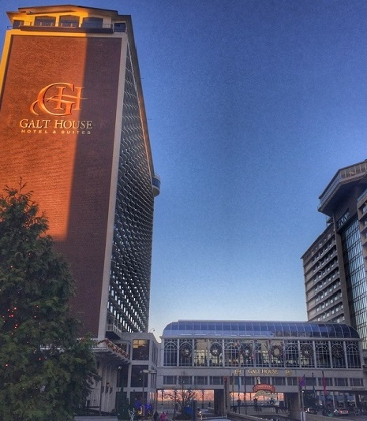
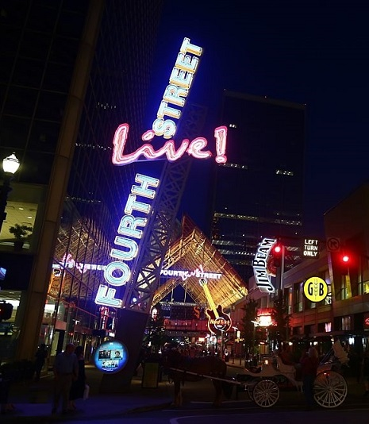
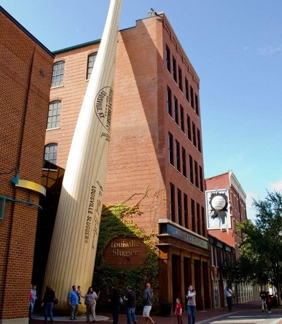
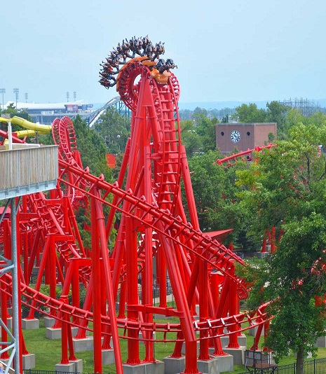
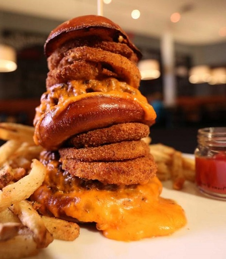

Hotels
Louisville city has several historic hotels. Among them, the Seelbach Hilton which is an architectural masterpiece began in 1869. The Brown Hotel is an opulent choice amongst travelers, visitors, and locals to the Louisville downtown and specially a favorite of Kentucky Derby attendees. The 16-story historic hotel is famous for its Southern hospitality, exceptional service, and luxurious accommodations.
Night Life
Fourth Street Live! is the entertainment and fine dining hub in the heart of downtown Louisville. You can find more than a dozen restaurants, bars, and nightlife hotspots just steps apart. The variety of venues all under one roof makes Fourth Street Live! the perfect place for every event - a casual night out with friends, a bachelor or bachelorette party, a romantic first date or celebrating a special occasion.
Events
There are many events in Louisville! Thunder Over Louisville, Pegasus Parade, Derby and Baloon Fest are the famous ones attending from all over the US. Also, you can catch a Louisville Cardinals basketball game at the KFC Yum! Center, or watch a performance by the Louisville Orchestra at the Kentucky Center for the Arts which hosts off-Broadway shows and musicals occasionally.
Museum
Louisville has many museums aimed at different crowds that will ensure a great time for anyone. The Louisville Slugger Museum which is great for baseball fans. Or you can learn about horse racing history at the Kentucky DerbyMuseum which hosts one of the three Triple Crown of Thoroughbred Horse races! The Muhammed Ali Museum is located in downtown which is a dedication to the late Muhammed Ali and a must-see for everyone.
Leisure
Kentucky Kingdom, Louisville Zoo, Mega Cavern, Bourbon trail and Water Front Park are best places to spend time leasurly. Travel and Leisure magazine named Louisville as one of the best places to travel. Bourbon trail is one of the populest one. When you’re traveling along the Urban Bourbon Trail, you’re in for cocktails classic and modern, live music, and the bourbon-inspired creativity of Louisville’s best bartenders and chefs.
Foods
Louisville offers a large variety of restaurants, diners, and fast food options and you will have an unimaginable amount of choices. You can choose restaurants such as Decca which offers unique dishes created from fresh-locally sourced ingredients or Addis Grill for Mediterranean and Ethiopian cuisine. Louisville also offers many high-end restaurants for a classier experience in NuLu or the Highlands.
Event 1
Event 2
Event 3